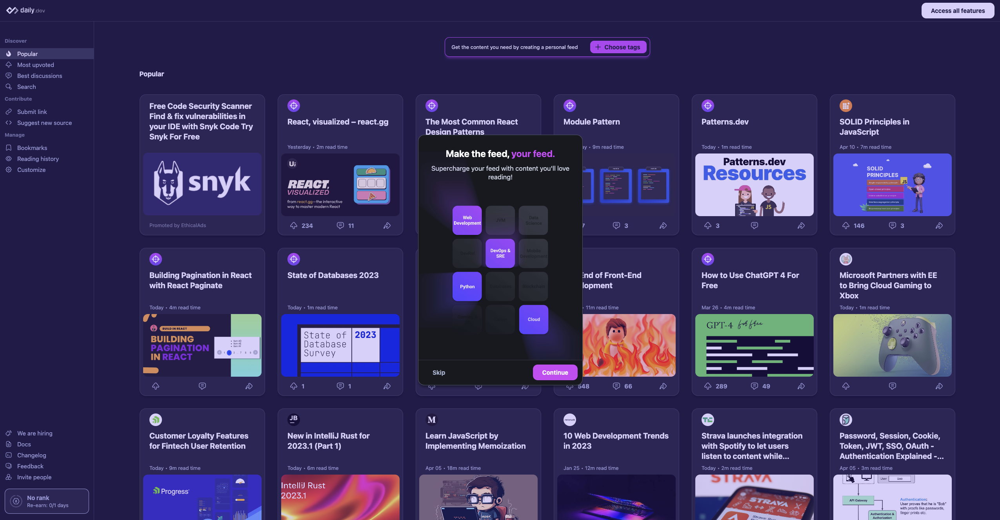

daily.dev's personal feed feature, "My Feed", allows you to customize the content you see based on your interests. This guide explains how to create your own personal feed.
Tag categories are the building blocks of your personal feed. They help you specify the topics and types of content you want to see in your feed. During the onboarding process, you'll be prompted to choose from a list of tag categories that might be relevant to your interests. You can adjust your tag selections at any time after the initial setup.
